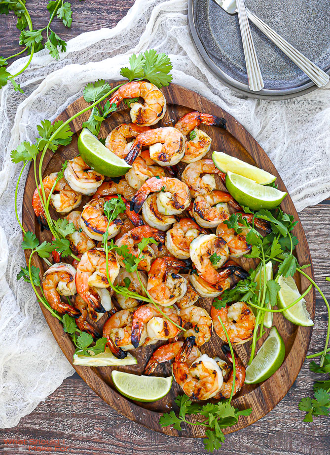

Margarita Grilled Shrimp

The shrimp can be marinated up to 3 hours before grilling.
The amount of red pepper used can be adjusted according to how hot you like it.
marinade is also great on chicken
- 1 pound shrimp, peeled and deveined
- 3 tablespoons olive oil
- 3 tablespoons chopped fresh cilantro
- 2 tablespoons fresh lime juice
- 2 cloves garlic, minced
- 2 tablespoons tequila
- 1/4 teaspoon cayenne pepper
- 1/4 teaspoon salt
- 4 bamboo skewers, soaked in water for 20 mins
- Stir shrimp, olive oil, cilantro, lime juice, garlic, tequila, cayenne pepper, and salt together in a bowl.
Cover the bowl with plastic wrap and refrigerate shrimp in marinade for 30 minutes.
- Preheat an outdoor grill for high heat and lightly oil grate.
- Remove shrimp from bowl and thread onto skewers; discard marinade.
- Cook on the preheated grill until shrimp turn pink, 2 to 3 minutes per side.
Return to menu